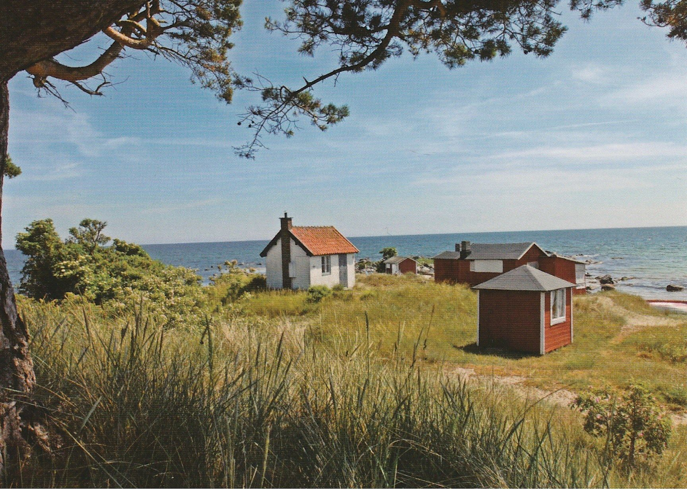

Summer Page
Summer is the hottest of the four temperate seasons, falling after spring and before autumn. At or around the summer solstice (about 3 days before Midsummer Day), the earliest sunrise and latest sunset occurs, the days are longest and the nights are shortest, with day length decreasing as the season progresses after the solstice. The date of the beginning of summer varies according to climate, tradition, and culture. When it is summer in the Northern Hemisphere.
Nulla lobortis massa est, et pretium magna faucibus non. Quisque pretium mauris eu ultrices feugiat. Pellentesque lorem felis, vulputate sit amet maximus et, volutpat ut metus. Integer et venenatis leo. Morbi eget dui enim. Sed eu mi rhoncus, luctus dui sit amet, varius ipsum. Nullam congue at mauris eget aliquam.